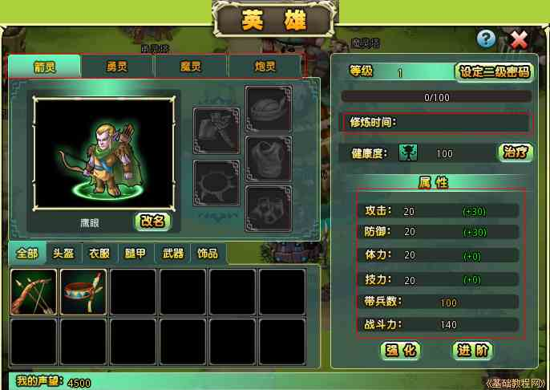
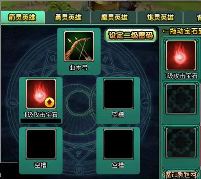

塔防游戏部落守卫战新手攻略
作者：TeliuTe 来源：基础教程网
六、英雄等级提升带兵数 返回目录 下一课英雄指是自己的箭灵、炮灵、魔灵、勇灵，升级经验可提升他们的等级，包括英雄修炼、强化、装备强化和英雄进阶等几个方面；
1、提升英雄等级
1）点击“神喻塔”，可以用金币来升级英雄的攻击力，金币可以通过民居、奖励和农场获得，
神喻塔消耗科技升级时间，总共有4小时，建筑升级时间总共有8小时；
2）在猎场到通关第三关后，可在下边状态栏中看到“英雄”按钮，点击查看英雄的属性和攻击力；

3）在上边选择一个英雄，默认是第一个箭灵，可以先提升魔灵和炮灵，他们用的比较多；
4）鼠标移到下边的装备栏里，可以看到可装备的英雄(红色表示关系不对)，双击或拖到英雄右侧即可；
5）在英雄对话框中，点击右侧属性下边的“强化”按钮，可以用水晶来强化英雄的攻击力等属性，水晶可以通过奖励和市场中获得；
6）打通第四关后，在神喻塔左边会出现“工坊”建筑，里面有英雄已经穿着的装备，
可以用骨片来提升英雄装备的等级，从而提升英雄的战斗力，骨片可以在兽骨坊获得，银刀来兑换(可加倍)，也可以通过奖励；
7）另外也可以在英雄对话框中，点英雄装备的下边的“强化装备”，
通过第五关后会出现宝石屋，可以点状态栏上的“宝石”，将宝石镶嵌在装备上，提升战斗力；

8）点击英雄对话框中的“进阶”可以进入英雄阶段对话框，通过声望来提升英雄阶段，右下角有绿色的说明；
9）在修练馆中可以通过普通修炼和高级修炼来提升英雄的经验值；
本节学习了提升英雄等级的基础知识，如果你成功地完成了练习，请继续学习下一课内容；
本教程由86团学校TeliuTe制作|著作权所有
基础教程网：http://teliute.org/
美丽的校园……
转载和引用本站内容，请保留版权信息和本站链接。